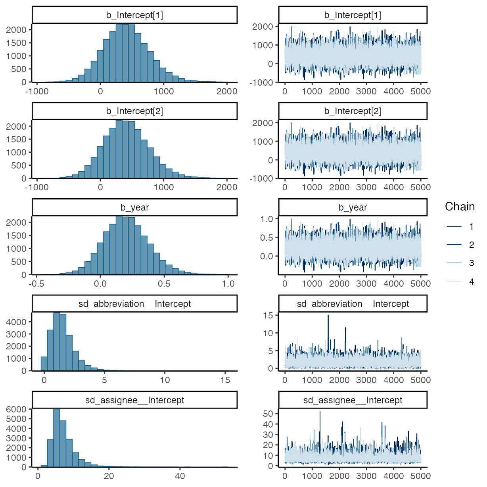
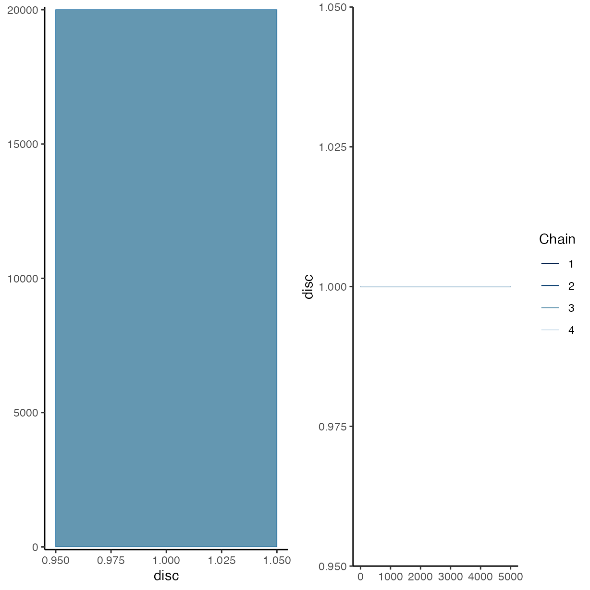
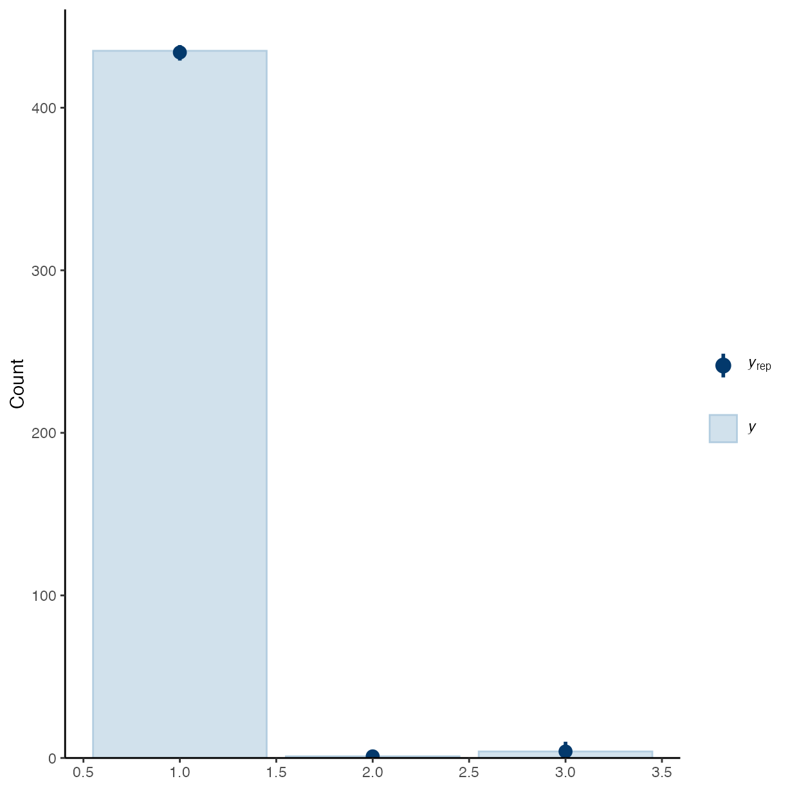
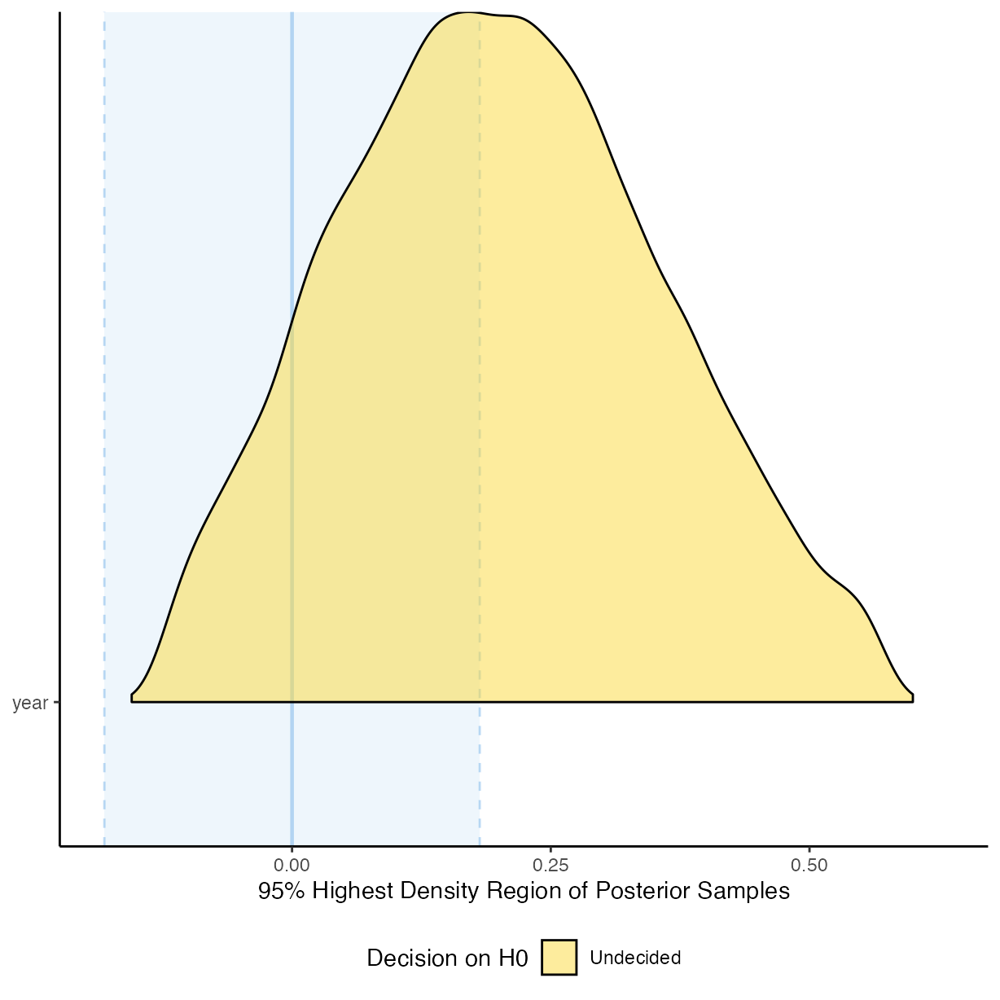
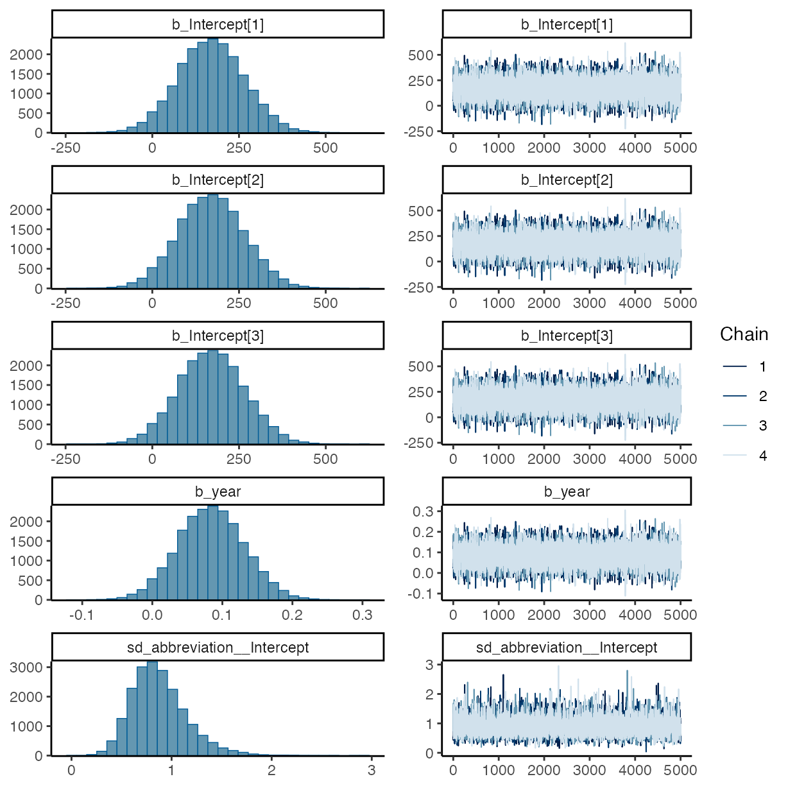
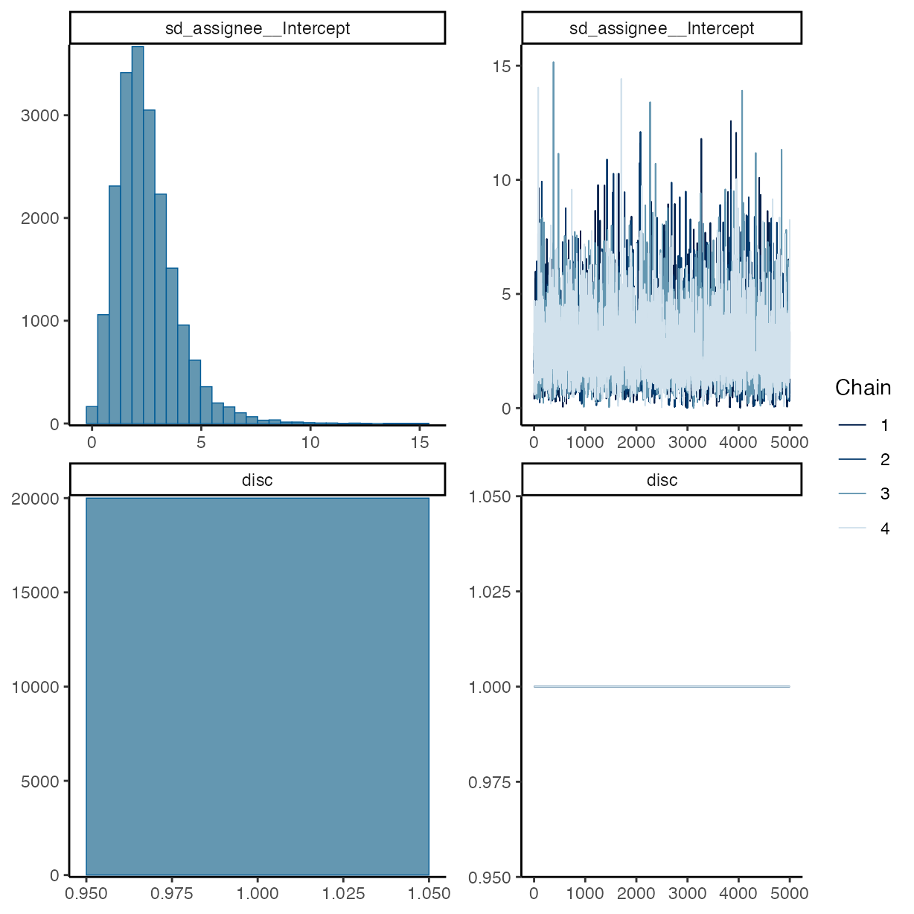
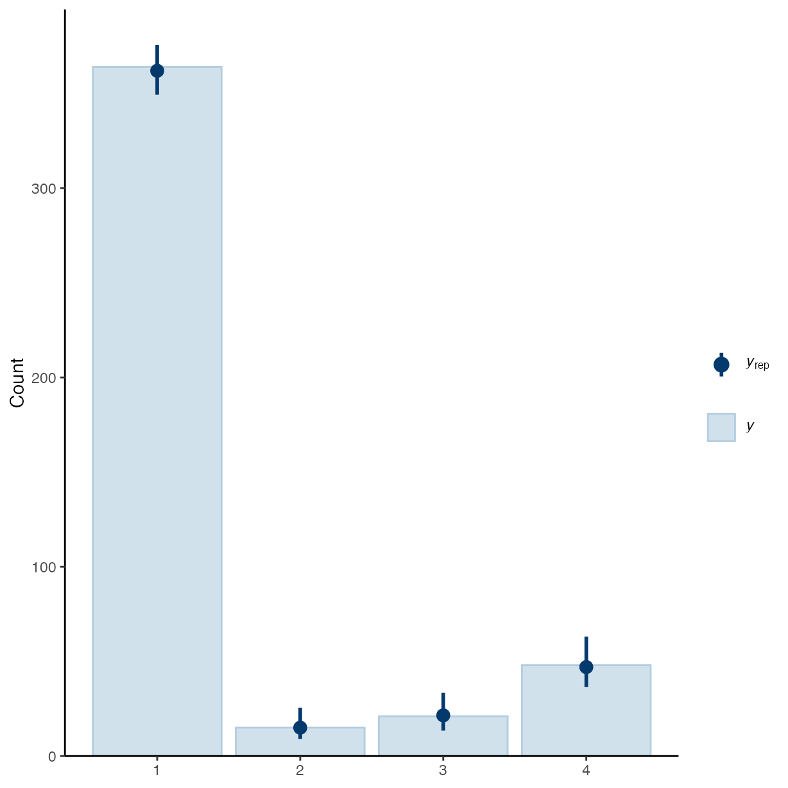
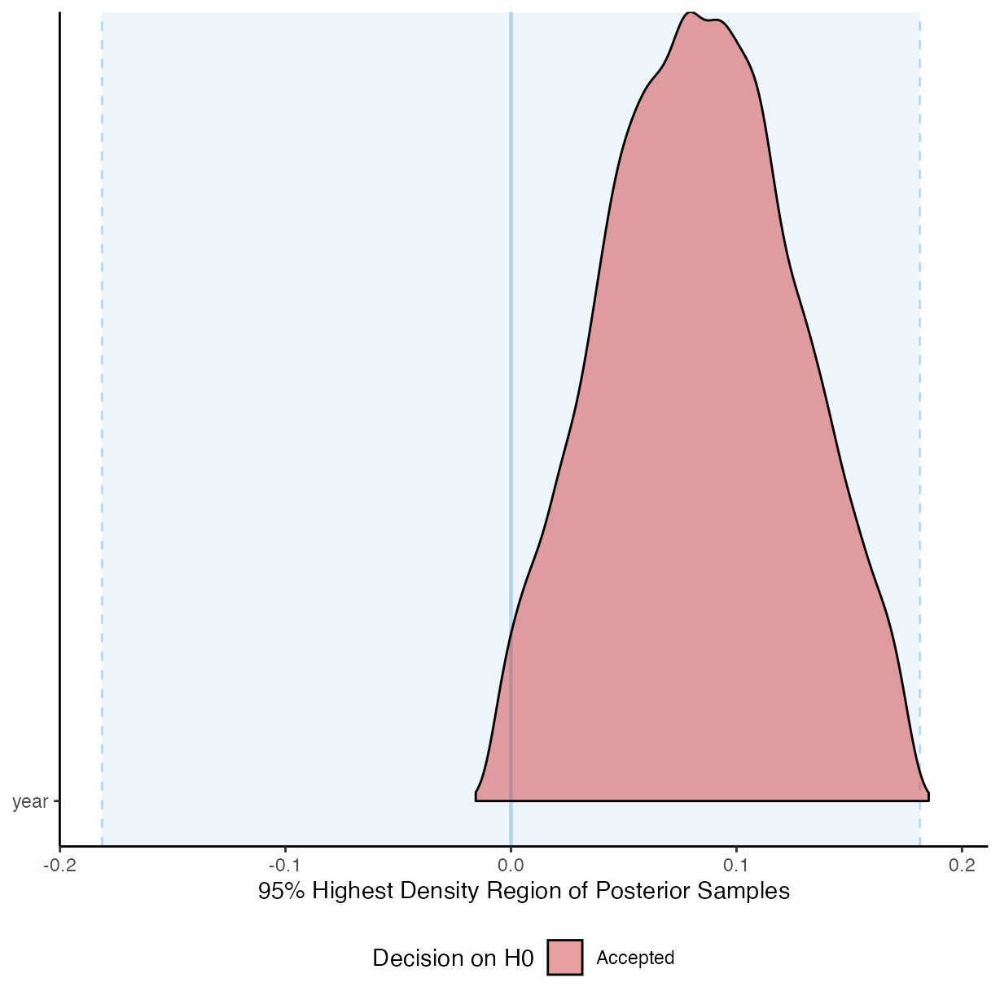

vignettes/g_analysis_year.Rmd
g_analysis_year.RmdWhile preparing a talk about this paper and compendium, typos and
other minor errors were corrected in these analyses. However, there is
a bug in
{report::report()} that prevents the report from being generated for a
{brms} model, it also duplicates
text if it does generate it. Therefore, code to generate the reports
are commented out and the original report objects are
maintained along with the original model objects that were reported in
the paper in the “Save the Model Objects” section.
This vignette documents the analysis of the data gathered from surveying 21 journals and 450 articles in the field of plant pathology for their openness and reproducibility and the effect that the publication year had on that score.
Load libraries used and setting the ggplot2 theme for the document.
library("brms")
library("bayestestR")
library("bayesplot")
library("ggplot2")
library("here")
library("pander")
library("report")
library("tidyr")
library("Reproducibility.in.Plant.Pathology")
options(mc.cores = parallel::detectCores())
theme_set(theme_classic())Test the effect that year of publication had on the code availability
and detect differences over time. Here, year is a fixed
effect, journal and assignee are assigned as
random effects.
rrpp <- import_notes()
rrpp <- drop_na(rrpp, comp_mthds_avail)
m_g1 <-
brm(
formula = comp_mthds_avail ~ year +
(1 | abbreviation) +
(1 | assignee),
data = rrpp,
seed = 27,
prior = priors,
family = cumulative(link = "logit"),
iter = 10000,
control = list(adapt_delta = 0.9999),
)
#> Compiling Stan program...
#> Start sampling
#> Warning: There were 1 divergent transitions after warmup. See
#> https://mc-stan.org/misc/warnings.html#divergent-transitions-after-warmup
#> to find out why this is a problem and how to eliminate them.
#> Warning: Examine the pairs() plot to diagnose sampling problems
summary(m_g1)
#> Warning: There were 1 divergent transitions after warmup. Increasing
#> adapt_delta above 0.9999 may help. See
#> http://mc-stan.org/misc/warnings.html#divergent-transitions-after-warmup
#> Family: cumulative
#> Links: mu = logit; disc = identity
#> Formula: comp_mthds_avail ~ year + (1 | abbreviation) + (1 | assignee)
#> Data: rrpp (Number of observations: 440)
#> Draws: 4 chains, each with iter = 10000; warmup = 5000; thin = 1;
#> total post-warmup draws = 20000
#>
#> Multilevel Hyperparameters:
#> ~abbreviation (Number of levels: 20)
#> Estimate Est.Error l-95% CI u-95% CI Rhat Bulk_ESS Tail_ESS
#> sd(Intercept) 1.51 0.96 0.12 3.81 1.00 6562 6643
#>
#> ~assignee (Number of levels: 5)
#> Estimate Est.Error l-95% CI u-95% CI Rhat Bulk_ESS Tail_ESS
#> sd(Intercept) 7.16 3.22 3.08 15.13 1.00 6598 10401
#>
#> Regression Coefficients:
#> Estimate Est.Error l-95% CI u-95% CI Rhat Bulk_ESS Tail_ESS
#> Intercept[1] 410.45 358.19 -254.08 1158.16 1.00 21660 12682
#> Intercept[2] 410.85 358.20 -253.95 1158.55 1.00 21658 12682
#> year 0.20 0.18 -0.13 0.57 1.00 21646 12648
#>
#> Further Distributional Parameters:
#> Estimate Est.Error l-95% CI u-95% CI Rhat Bulk_ESS Tail_ESS
#> disc 1.00 0.00 1.00 1.00 NA NA NA
#>
#> Draws were sampled using sampling(NUTS). For each parameter, Bulk_ESS
#> and Tail_ESS are effective sample size measures, and Rhat is the potential
#> scale reduction factor on split chains (at convergence, Rhat = 1).
plot(m_g1)
pp_check(m_g1, ndraws = 50, type = "bars")
plot(equivalence_test(m_g1))
#> Picking joint bandwidth of 0.0191
# pander(m_g1_report <- report(m_g1))
#
# m_g1_es <- report_effectsize(m_g1)
rrpp <- import_notes()
rrpp <- drop_na(rrpp, data_avail)
m_g2 <-
brm(
formula = data_avail ~ year +
(1 | abbreviation) +
(1 | assignee),
data = rrpp,
seed = 27,
prior = priors,
family = cumulative(link = "logit"),
iter = 10000,
control = list(adapt_delta = 0.99999),
)
#> Compiling Stan program...
#> Start sampling
summary(m_g2)
#> Family: cumulative
#> Links: mu = logit; disc = identity
#> Formula: data_avail ~ year + (1 | abbreviation) + (1 | assignee)
#> Data: rrpp (Number of observations: 448)
#> Draws: 4 chains, each with iter = 10000; warmup = 5000; thin = 1;
#> total post-warmup draws = 20000
#>
#> Multilevel Hyperparameters:
#> ~abbreviation (Number of levels: 20)
#> Estimate Est.Error l-95% CI u-95% CI Rhat Bulk_ESS Tail_ESS
#> sd(Intercept) 0.88 0.28 0.43 1.52 1.00 6360 10355
#>
#> ~assignee (Number of levels: 5)
#> Estimate Est.Error l-95% CI u-95% CI Rhat Bulk_ESS Tail_ESS
#> sd(Intercept) 2.49 1.38 0.49 5.87 1.00 3713 3378
#>
#> Regression Coefficients:
#> Estimate Est.Error l-95% CI u-95% CI Rhat Bulk_ESS Tail_ESS
#> Intercept[1] 169.89 95.74 -14.91 357.77 1.00 20587 12536
#> Intercept[2] 170.17 95.74 -14.60 358.19 1.00 20587 12520
#> Intercept[3] 170.64 95.74 -14.15 358.58 1.00 20586 12519
#> year 0.08 0.05 -0.01 0.18 1.00 20455 12439
#>
#> Further Distributional Parameters:
#> Estimate Est.Error l-95% CI u-95% CI Rhat Bulk_ESS Tail_ESS
#> disc 1.00 0.00 1.00 1.00 NA NA NA
#>
#> Draws were sampled using sampling(NUTS). For each parameter, Bulk_ESS
#> and Tail_ESS are effective sample size measures, and Rhat is the potential
#> scale reduction factor on split chains (at convergence, Rhat = 1).
plot(m_g2)
pp_check(m_g2, ndraws = 50, type = "bars")
plot(equivalence_test(m_g2))
#> Picking joint bandwidth of 0.00519
# pander(m_g2_report <- report(m_g2))
#
# m_g2_es <- report_effectsize(m_g2)Save the model objects for figures in the paper.
save(m_g1, file = here("inst/extdata/m_g1.Rda"))
save(m_g2, file = here("inst/extdata/m_g2.Rda"))
save(m_g1_report, file = here("inst/extdata/m_g1_report.Rda"))
save(m_g2_report, file = here("inst/extdata/m_g2_report.Rda"))
save(m_g1_es, file = here("inst/extdata/m_g1_es.Rda"))
save(m_g2_es, file = here("inst/extdata/m_g2_es.Rda"))
sessioninfo::session_info()
#> ─ Session info ───────────────────────────────────────────────────────────────
#> setting value
#> version R version 4.4.1 (2024-06-14)
#> os macOS Sonoma 14.6
#> system aarch64, darwin20
#> ui X11
#> language en
#> collate en_US.UTF-8
#> ctype en_US.UTF-8
#> tz Australia/Perth
#> date 2024-08-07
#> pandoc 3.3 @ /opt/homebrew/bin/ (via rmarkdown)
#>
#> ─ Packages ───────────────────────────────────────────────────────────────────
#> package * version date (UTC) lib source
#> abind 1.4-5 2016-07-21 [1] CRAN (R 4.4.0)
#> backports 1.5.0 2024-05-23 [1] CRAN (R 4.4.0)
#> bayesplot * 1.11.1 2024-02-15 [1] CRAN (R 4.4.0)
#> bayestestR * 0.14.0 2024-07-24 [1] CRAN (R 4.4.0)
#> bridgesampling 1.1-2 2021-04-16 [1] CRAN (R 4.4.0)
#> brms * 2.21.0 2024-03-20 [1] CRAN (R 4.4.1)
#> Brobdingnag 1.2-9 2022-10-19 [1] CRAN (R 4.4.0)
#> bslib 0.8.0 2024-07-29 [1] CRAN (R 4.4.0)
#> cachem 1.1.0 2024-05-16 [1] CRAN (R 4.4.0)
#> callr 3.7.6 2024-03-25 [1] CRAN (R 4.4.0)
#> cellranger 1.1.0 2016-07-27 [1] CRAN (R 4.4.0)
#> checkmate 2.3.2 2024-07-29 [1] CRAN (R 4.4.0)
#> cli 3.6.3 2024-06-21 [1] CRAN (R 4.4.0)
#> coda 0.19-4.1 2024-01-31 [1] CRAN (R 4.4.0)
#> codetools 0.2-20 2024-03-31 [2] CRAN (R 4.4.1)
#> colorspace 2.1-1 2024-07-26 [1] CRAN (R 4.4.0)
#> curl 5.2.1 2024-03-01 [1] CRAN (R 4.4.0)
#> datawizard 0.12.2 2024-07-21 [1] CRAN (R 4.4.0)
#> desc 1.4.3 2023-12-10 [1] CRAN (R 4.4.0)
#> digest 0.6.36 2024-06-23 [1] CRAN (R 4.4.0)
#> distributional 0.4.0 2024-02-07 [1] CRAN (R 4.4.0)
#> dplyr 1.1.4 2023-11-17 [1] CRAN (R 4.4.0)
#> emmeans 1.10.3 2024-07-01 [1] CRAN (R 4.4.0)
#> estimability 1.5.1 2024-05-12 [1] CRAN (R 4.4.0)
#> evaluate 0.24.0 2024-06-10 [1] CRAN (R 4.4.0)
#> fansi 1.0.6 2023-12-08 [1] CRAN (R 4.4.0)
#> farver 2.1.2 2024-05-13 [1] CRAN (R 4.4.0)
#> fastmap 1.2.0 2024-05-15 [1] CRAN (R 4.4.0)
#> fs 1.6.4 2024-04-25 [1] CRAN (R 4.4.0)
#> generics 0.1.3 2022-07-05 [1] CRAN (R 4.4.0)
#> ggplot2 * 3.5.1 2024-04-23 [1] CRAN (R 4.4.0)
#> ggridges 0.5.6 2024-01-23 [1] CRAN (R 4.4.0)
#> glue 1.7.0 2024-01-09 [1] CRAN (R 4.4.0)
#> gridExtra 2.3 2017-09-09 [1] CRAN (R 4.4.0)
#> gtable 0.3.5 2024-04-22 [1] CRAN (R 4.4.0)
#> here * 1.0.1 2020-12-13 [1] CRAN (R 4.4.0)
#> highr 0.11 2024-05-26 [1] CRAN (R 4.4.0)
#> htmltools 0.5.8.1 2024-04-04 [1] CRAN (R 4.4.0)
#> htmlwidgets 1.6.4 2023-12-06 [1] CRAN (R 4.4.0)
#> inline 0.3.19 2021-05-31 [1] CRAN (R 4.4.0)
#> insight 0.20.2 2024-07-13 [1] CRAN (R 4.4.0)
#> jquerylib 0.1.4 2021-04-26 [1] CRAN (R 4.4.0)
#> jsonlite 1.8.8 2023-12-04 [1] CRAN (R 4.4.0)
#> knitr 1.48 2024-07-07 [1] CRAN (R 4.4.0)
#> labeling 0.4.3 2023-08-29 [1] CRAN (R 4.4.0)
#> lattice 0.22-6 2024-03-20 [2] CRAN (R 4.4.1)
#> lifecycle 1.0.4 2023-11-07 [1] CRAN (R 4.4.0)
#> loo 2.8.0 2024-07-03 [1] CRAN (R 4.4.0)
#> magrittr 2.0.3 2022-03-30 [1] CRAN (R 4.4.0)
#> MASS 7.3-60.2 2024-04-26 [2] CRAN (R 4.4.1)
#> Matrix 1.7-0 2024-04-26 [2] CRAN (R 4.4.1)
#> matrixStats 1.3.0 2024-04-11 [1] CRAN (R 4.4.0)
#> minty 0.0.1 2024-05-22 [1] CRAN (R 4.4.0)
#> multcomp 1.4-26 2024-07-18 [1] CRAN (R 4.4.0)
#> munsell 0.5.1 2024-04-01 [1] CRAN (R 4.4.0)
#> mvtnorm 1.2-5 2024-05-21 [1] CRAN (R 4.4.0)
#> nlme 3.1-164 2023-11-27 [2] CRAN (R 4.4.1)
#> pander * 0.6.5 2022-03-18 [1] CRAN (R 4.4.0)
#> pillar 1.9.0 2023-03-22 [1] CRAN (R 4.4.0)
#> pkgbuild 1.4.4 2024-03-17 [1] CRAN (R 4.4.0)
#> pkgconfig 2.0.3 2019-09-22 [1] CRAN (R 4.4.0)
#> pkgdown 2.1.0 2024-07-06 [1] CRAN (R 4.4.0)
#> plyr 1.8.9 2023-10-02 [1] CRAN (R 4.4.0)
#> posterior 1.6.0 2024-07-03 [1] CRAN (R 4.4.0)
#> processx 3.8.4 2024-03-16 [1] CRAN (R 4.4.0)
#> ps 1.7.7 2024-07-02 [1] CRAN (R 4.4.0)
#> purrr 1.0.2 2023-08-10 [1] CRAN (R 4.4.0)
#> QuickJSR 1.3.1 2024-07-14 [1] CRAN (R 4.4.0)
#> R6 2.5.1 2021-08-19 [1] CRAN (R 4.4.0)
#> ragg 1.3.2 2024-05-15 [1] CRAN (R 4.4.0)
#> Rcpp * 1.0.13 2024-07-17 [1] CRAN (R 4.4.0)
#> RcppParallel 5.1.8 2024-07-06 [1] CRAN (R 4.4.0)
#> readODS 2.3.0 2024-05-26 [1] CRAN (R 4.4.0)
#> report * 0.4.0 2021-09-30 [1] CRAN (R 4.4.1)
#> Reproducibility.in.Plant.Pathology * 1.0.2 2024-08-06 [1] Github (openplantpathology/Reproducibility_in_Plant_Pathology@240170e)
#> reshape2 1.4.4 2020-04-09 [1] CRAN (R 4.4.0)
#> rlang 1.1.4 2024-06-04 [1] CRAN (R 4.4.0)
#> rmarkdown 2.27 2024-05-17 [1] CRAN (R 4.4.0)
#> rprojroot 2.0.4 2023-11-05 [1] CRAN (R 4.4.0)
#> rstan 2.32.6 2024-03-05 [1] CRAN (R 4.4.1)
#> rstantools 2.4.0 2024-01-31 [1] CRAN (R 4.4.0)
#> rstudioapi 0.16.0 2024-03-24 [1] CRAN (R 4.4.0)
#> sandwich 3.1-0 2023-12-11 [1] CRAN (R 4.4.0)
#> sass 0.4.9 2024-03-15 [1] CRAN (R 4.4.0)
#> scales 1.3.0 2023-11-28 [1] CRAN (R 4.4.0)
#> see 0.8.5 2024-07-17 [1] CRAN (R 4.4.0)
#> sessioninfo 1.2.2 2021-12-06 [1] CRAN (R 4.4.0)
#> StanHeaders 2.32.10 2024-07-15 [1] CRAN (R 4.4.0)
#> stringi 1.8.4 2024-05-06 [1] CRAN (R 4.4.0)
#> stringr 1.5.1 2023-11-14 [1] CRAN (R 4.4.0)
#> survival 3.6-4 2024-04-24 [2] CRAN (R 4.4.1)
#> systemfonts 1.1.0 2024-05-15 [1] CRAN (R 4.4.0)
#> tensorA 0.36.2.1 2023-12-13 [1] CRAN (R 4.4.0)
#> textshaping 0.4.0 2024-05-24 [1] CRAN (R 4.4.0)
#> TH.data 1.1-2 2023-04-17 [1] CRAN (R 4.4.0)
#> tibble 3.2.1 2023-03-20 [1] CRAN (R 4.4.0)
#> tidyr * 1.3.1 2024-01-24 [1] CRAN (R 4.4.0)
#> tidyselect 1.2.1 2024-03-11 [1] CRAN (R 4.4.0)
#> tzdb 0.4.0 2023-05-12 [1] CRAN (R 4.4.0)
#> utf8 1.2.4 2023-10-22 [1] CRAN (R 4.4.0)
#> V8 4.4.2 2024-02-15 [1] CRAN (R 4.4.0)
#> vctrs 0.6.5 2023-12-01 [1] CRAN (R 4.4.0)
#> withr 3.0.1 2024-07-31 [1] CRAN (R 4.4.0)
#> xfun 0.46 2024-07-18 [1] CRAN (R 4.4.0)
#> xtable 1.8-4 2019-04-21 [1] CRAN (R 4.4.0)
#> yaml 2.3.10 2024-07-26 [1] CRAN (R 4.4.0)
#> zip 2.3.1 2024-01-27 [1] CRAN (R 4.4.0)
#> zoo 1.8-12 2023-04-13 [1] CRAN (R 4.4.0)
#>
#> [1] /Users/283204f/Library/R/arm64/4.4/library
#> [2] /Library/Frameworks/R.framework/Versions/4.4-arm64/Resources/library
#>
#> ──────────────────────────────────────────────────────────────────────────────